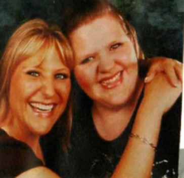

Liebevolle Betreuung
Kleine Gruppen und feste Bezugspersonen geben eurem Kind Sicherheit und Geborgenheit.
„Alles was ein Kind braucht, um glücklich zu sein."
In unserer liebevollen Großtagespflege im Looscheid 82 betreuen wir die Kleinsten mit Herz, Geduld und ganz viel Spaß – in familiärer Atmosphäre und kleinen Gruppen.
Bei uns steht das Wohl eures Kindes an erster Stelle – jeden Tag aufs Neue.
Kleine Gruppen und feste Bezugspersonen geben eurem Kind Sicherheit und Geborgenheit.
Basteln, Singen, Toben und Matschen – wir fördern die Neugier der Kleinsten spielerisch.
Frisch zubereitete Mahlzeiten und gemeinsames Essen gehören bei uns fest zum Tag dazu.
Ob Garten, Spielplatz oder Spaziergang – wir sind bei (fast) jedem Wetter draußen unterwegs.

Wir sind Melanie und Ivonne – zwei Schwestern aus Essen-Stoppenberg und die Gesichter hinter Melli's Krabbelzwergen. Seit Januar 2016 betreuen wir in unserer Großtagespflege Kinder in familiärer Atmosphäre.
In unserem 112 m² großen Haus mit rund 300 m² Außengelände ist jede Menge Platz zum Spielen, Tanzen, Toben und Schlafen – denn nur glückliche Kinder können die Welt unbeschwert entdecken.
| Tag | Uhrzeit |
|---|---|
| Montag – Donnerstag | 7:30 – 15:30 Uhr |
| Freitag | 7:30 – 14:30 Uhr |
| Samstag & Sonntag | geschlossen |
Individuelle Bring- und Abholzeiten sprechen wir gerne persönlich mit euch ab.